24 14 002 Replacing Selector Shaft Seal (GA6HP19)
24 14 002 Replacing Selector Shaft Seal (GA6HP19)
Special tools required:

IMPORTANT:
After completion of work, check transmission oil level.
Use only the approved transmission fluid.
Failure to comply with this requirement will result in serious damage to the automatic transmission.

Necessary preliminary tasks:
- Remove heat shields
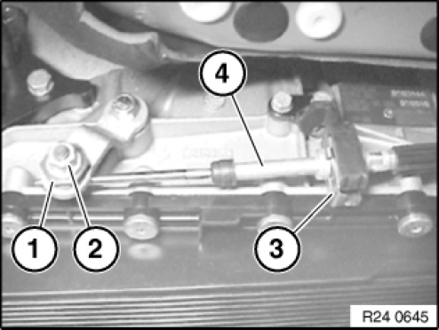
NOTE:
Version 1:
Grip clamping sleeve (1) and slacken nut (2).
Detach retainer (3) downwards using a screwdriver.
Pull cable (4) out of holder.
Installation:
Adjust gearshift lever.
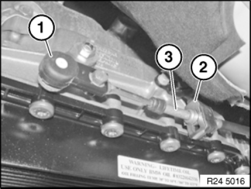
NOTE:
Version 2:
Release shift cable head (1) from ball head.
Installation:
Adjust selector lever.
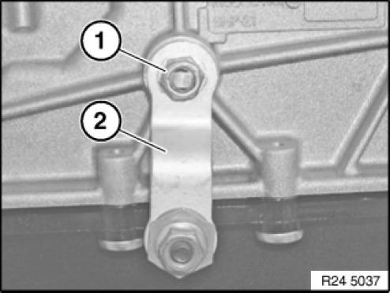
Slacken nut (1).
Take off holder (2).
Tightening torque 24 51 1AZ.
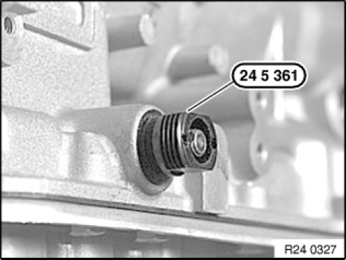
Screw in special tool 24 5 361 until it is firmly connected with radial shaft seal hat.
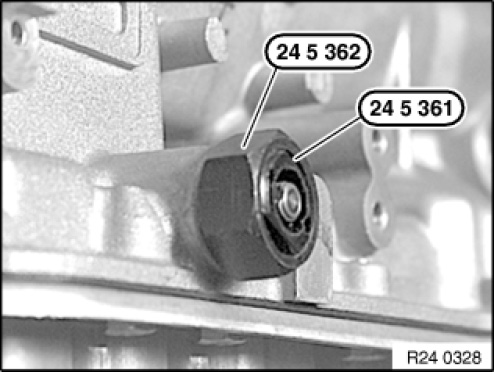
Screw special tool 24 5 362 onto special tool 24 5 361 and tighten down.
This pulls the shaft seal out of the transmission housing.
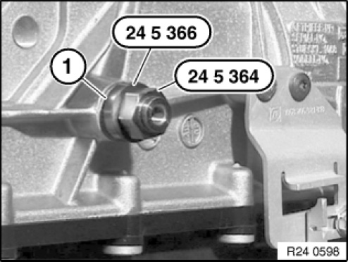
Oil sealing lip on shaft seal (1).
Screw in radial shaft seal (1) with special tools 24 5 366 and 24 5 364 as far as it go.
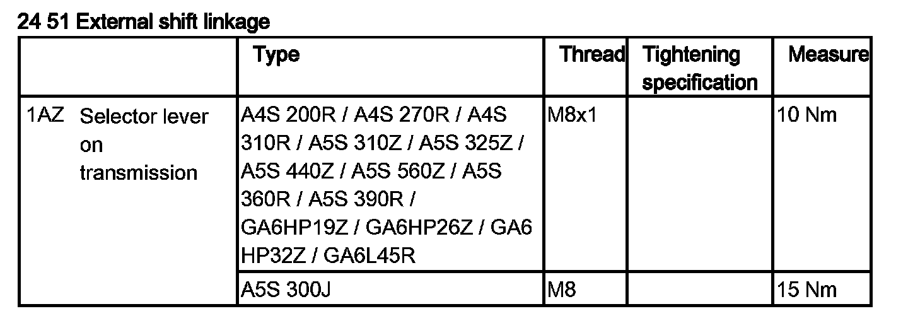
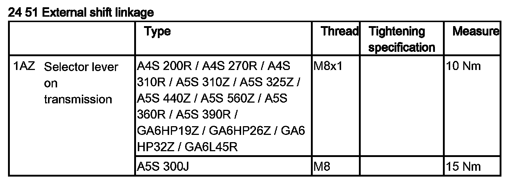
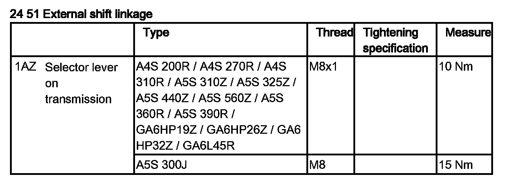
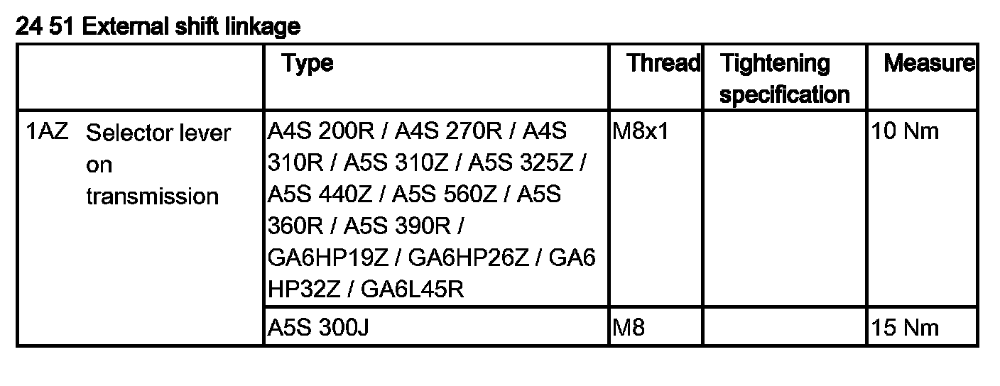
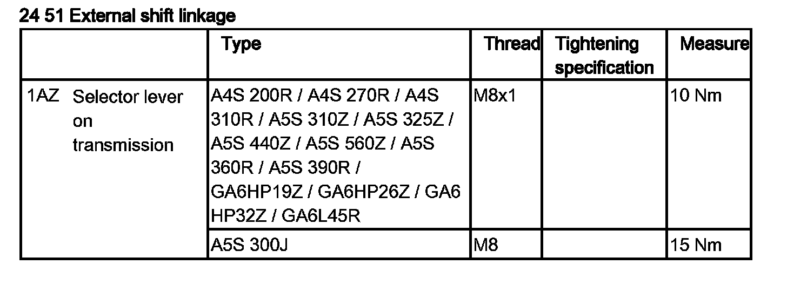
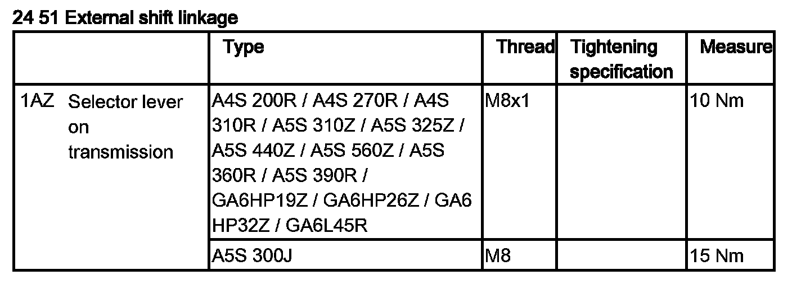